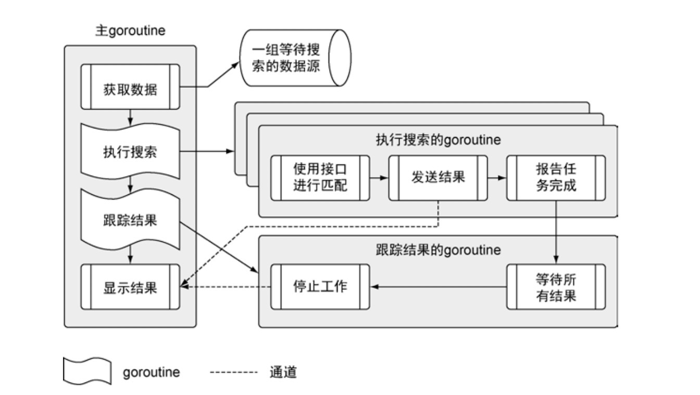

Go语言实战-快速开始一个Go程序
前言
通过例子学习
- 如何声明类型、变量、函数、方法
- 启动并同步操作goroutine
- 使用接口写通用的代码
- 处理程序逻辑和错误
功能简介
该例子从不同的数据源拉取数据，将数据与检索项做对比，然后将匹配内容显示在终端窗口。该程序会读取文本文件，进行网络调用，解码XML和JSON成结构化类型数据，并用上并发机制来保障速度。
程序架构

项目结构
- sample |
重点讲解
程序入口
程序的入口有两个特征：
- 包名为main
- 名为main的函数
package main |
包
包的名字类似于命名空间，可间接访问包内声明的标识符。同一个文件夹里的代码文件，必须使用同一个包名。这个特性可把不同包中定义的同名标识符区分开。
注意到下述代码中，包前加下划线。这是为了让Go语言对包做初始化操作（init函数），但是并不使用包里的标识符。Go编译器不允许导入包而不使用，下划线可让编译器接受这类导入。
import ( |
init 函数
init函数都会在main函数执行前调用。
func init() { |
编译器如何找包
编译器查找包的时候，总是会到 GOROOT 和 GOPATH 环境变量引用的位置去查找。
GOROOT="/Users/me/go" |
声明类型
声明一个结构类型
type Feed struct { |
声明最后 ` 引号里的部分被称作标记（tag）。这个标记描述了JSON解码的元数据，每个标记对应JSON文档中指定名字的字段。
{ |
声明变量
- 变量使用关键字 var声明
var matchers = make(map[string]Matcher) |
- 简化变量声明运算符（:=）
feeds, err := RetrieveFeeds() |
(:=)只是一种简化记法，让代码可读性更高。(:=)与 var 无区别。据经验，若声明初始值为零值的变量，应使用 var ；若声明初始值非零值的变量或者使用函数返回值创建变量，应该使用(:=)。
标识符首字母是小写的，代表不对外公开。反之首字母大写代表对外公开。不对外公开的标识符可通过间接的方式访问到。例如，通过函数返回一个未公开的值。
若map变量声明改为如下，会怎么样呢？
var matchers = map[string]Matcher |
在使用matchers时会收到报错信息。这是因为map变量的默认零值是nil，所以要先通过make来构造map并将构造后的值赋值给变量。
声明函数
关键字func声明函数，结构是 func + 函数名 + 参数（可无） + 返回值（可无） + 函数体。
func Run(searchTerm string) {} |
声明方法
结构是 func + 接收者 + 函数名 + 参数 + 返回值 + 函数体。
实现接口方法时候需要注意case3，如果通过接口类型的值调用方法，使用指针作为接收者声明的方法，只能在接口类型的值是一个指针的时
候被调用 。
type defaultMatcher struct{} |
启动并同步操作goroutine
非常推荐使用 sync包中的WaitGroup 来跟踪 goroutine 的工作是否完成。WaitGroup 是一个计数信号量，我们可以利用它来统计所有的goroutine 是不是都完成了工作。
// 创建一个无缓冲的通道，接收匹配后的结果 |
goroutine完成工作后，会通过waitGroup.Done()递减waitGroup的计数值。
// 为每个数据源启动一个 goroutine 来查找结果 |
启动一个监控所有goroutine都完成工作的goroutine，利用WaitGroup的 Wait 方法。这个方法会导致 goroutine阻塞，直到 WaitGroup 内部的计数到达0。之后，goroutine 调用了内置的 close 函数，关闭了通道，最终导致程序终止。
go func () { |
使用接口写通用的代码
声明接口类型
type Matcher interface { |
命名接口的时候，需要遵守 Go 语言的命名惯例。如果接口类型只包含一个方法，类型的名字以 er 结尾。如果接口类型内部声明了多个方法，其名字需要与其行为关联。
实现接口
type defaultMatcher struct{} |
如下函数，可以接收实现了Macher接口的defaultMatcher类型作为传参。
func Match(matcher Matcher, feed *Feed, searchTerm string, results chan<- *Result) { |
处理程序逻辑和错误
document, err := m.retrieve(feed) |
小结
- 每个代码文件都属于一个包，而包名应该与代码文件所在的文件夹同名。
- Go 语言提供了多种声明和初始化变量的方式。如果变量的值没有显式初始化，编译器会将变量初始化为零值。
- 使用指针可以在函数间或者 goroutine 间共享数据。
- 通过启动 goroutine 和使用通道完成并发和同步。
- Go 语言提供了内置函数来支持 Go 语言内部的数据结构。
- 使用 Go 接口可以编写通用的代码和框架。